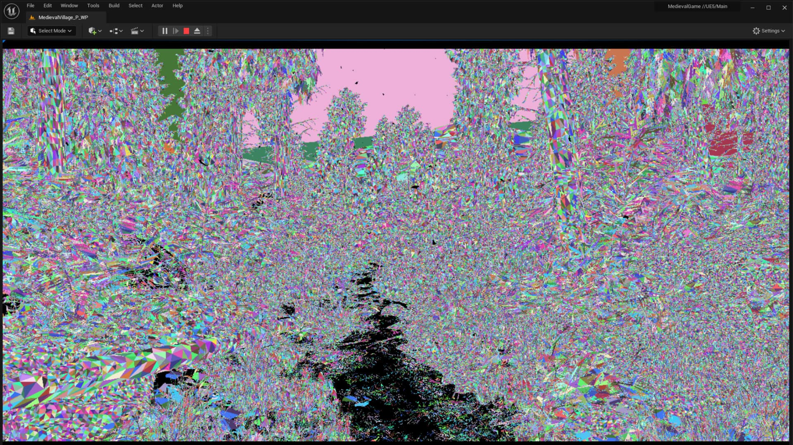

نانایت(Nanite): هندسه مجازی پیشرفته – پشتیبانی از پوشش گیاهی و متریالهای پیچیده
سیستم نانایت در آنریل انجین ۵.۶ با تحولی بزرگ همراه شده و پشتیبانی از پوشش گیاهی متراکم، متریالهای چندلایه و داراییهای محیطی پویا را به ارمغان آورده است. این قابلیت امکان رندر جنگلهایی با هزاران برگ منحصربهفرد، سطوح سنگی با جزئیات پیچیده و عناصر معماری دقیق را با کیفیتی نزدیک به واقعیت و بدون کاهش عملکرد فراهم میکند. توسعهدهندگان اکنون میتوانند داراییهای با کیفیت سینمایی را بهراحتی در پروژههای خود وارد کرده و فرآیندهای کاری خود را سریعتر، کارآمدتر و خلاقانهتر کنند.
لومن(lumen): روشنایی سراسری و بازتابهای بهبودیافته – فناوری ردیابی پرتو پیشرفته
لومن حالا با محاسبات دقیقتر پرش نور و بازتابهای پیشرفته ردیابی پرتو، عملکردی خیرهکننده در صحنههای پیچیده با منابع نوری متعدد و اشیاء متحرک ارائه میکند. نورپردازی داخلی حس گرما و طبیعی بودن بیشتری القا میکند، و نور خورشید در فضای باز بهصورت پویا با شرایط جوی هماهنگ میشود. این پیشرفتها واقعیگرایی را در بازیها و تجربههای سینمایی به سطحی جدید میرسانند و به توسعهدهندگان اجازه میدهند بدون نیاز به فرآیند زمانبر پخت نور، جلوههای بصری زنده و واقعی خلق کنند.

انیمیشن و ریگینگ پیشرفته: ابزارهای کنترل ریگ، بازهدفگذاری و سکانسر بهبودیافته
آنریل انجین ۵.۶ با گسترش ابزارهای انیمیشن خود، سیستم بازهدفگذاری سریع و کارآمدی را ارائه میدهد که انتقال انیمیشنها به مدلهای مختلف کاراکترها را با حفظ کیفیت بهینه میسازد. کنترل ریگ بهبودیافته با ابزارهای پیشرفته تغییر شکل، حرکات کاراکترها را طبیعیتر و واقعیتر میکند. همچنین، ارتقای سکانسر فرآیند خلق صحنههای سینمایی را روانتر و خلاقانهتر کرده است. این پیشرفتها به انیماتورها کنترل مستقیمتر و دقیقتری ارائه میدهند و نیاز به استفاده از نرمافزارهای جانبی را به حداقل میرسانند.

سیستم تقسیمبندی جهان: بهینهسازی پیشرفته برای خلق جهانهای باز گسترده
سیستم تقسیمبندی جهان با بارگذاری و تخلیه هوشمندتر بخشهای نقشه، مصرف حافظه را بهینه کرده و گیمپلی را کاملاً یکپارچه حفظ میکند. این سیستم با پشتیبانی پیشرفته از استریمینگ تکسچرها و داراییهای باکیفیت در محیطهای گسترده، گزینهای ایدهآل برای خلق بازیهای جهانباز و شبیهسازیهای پیچیده است. جهانهای وسیع حالا پویاتر و زندهتر به نظر میرسند، با جزئیات دوردست که بهصورت روان و بیوقفه هنگام کاوش بازیکنان بارگذاری میشوند.

متاساوندز(meta sounds): خلق صدای رویهای با کیفیتی بیسابقه
متاساوندز در آنریل انجین ۵.۶ با ارائه کنترل بیسابقهای بر تولید صدای بلادرنگ، تجربهای انقلابی را برای توسعهدهندگان رقم میزند. این سیستم با پشتیبانی از مدولاسیون پیشرفته، مناظر صوتی محیطی پویا و تعاملی، و انتقالهای هوشمند مبتنی بر رویدادهای گیمپلی، امکانات جدیدی را فراهم میکند. از تنظیم شدت صدای باد با تغییرات آبوهوایی گرفته تا تطبیق صدای قدمها با نوع زمین، متاساوندز طراحی صوتی فوقالعاده واکنشگرا و immersive را ممکن میسازد.

ابزارهای تولید مجازی: رندرینگ بیدرنگ با کیفیتی در سطح سینمایی
مجموعه ابزارهای تولید مجازی آنریل انجین ۵.۶ با سیستم پیشرفته جلوههای بصری دروندوربینی و تأخیر به حداقل رسیده، امکان بهروزرسانی سریع و فوقالعاده دقیق دیوارهای LED را فراهم میسازد. کارگردانان و فیلمبرداران میتوانند بهصورت زنده و بدون اختلال در تجربه غوطهور، نورپردازی، زوایای دوربین و ترکیببندی صحنهها را تنظیم کنند. این نوآوری، تحولی عظیم برای فیلمسازان به ارمغان آورده و رندرینگ بیدرنگ در محیطهای مجازی را به ابزاری بینهایت کاربردی و خلاقانه تبدیل کرده است.